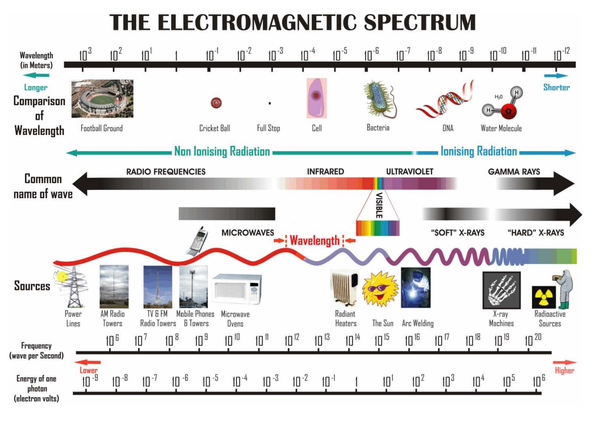

Ham radio is a hobby enjoyed by millions of people around the world. It involves the use of radio equipment to communicate with other ham radio operators. Ham radio operators use two-way radios to communicate with each other, as well as to send and receive messages to other radio operators. Radio operators can communicate with each other over long distances, and can even communicate with other radio operators in different countries. They use a variety of frequencies to communicate, and they often use specialized equipment, such as antennas, amplifiers, and filters, to improve their signal. Ham radio operators also use digital modes, such as packet radio and SSTV, to send and receive images, text, and audio. Operators often participate in contests and awards programs, and they often organize special events, such as field days, to demonstrate their radio operating skills. Ham radio is a great way to meet new people, learn about radio technology, and explore the world of radio communication.
Radio waves are part of electromagnatic spectrum. There frequency falls in the range of 3KHz - 300GHz. The most common form technology use to listen to radio broadcast is FM and AM.
Radio receiver is and electrical or electronic equipment which is used to listen to radioa broadcast. it has tuning knobs and buttons to help in selecting the suitable station for listening.